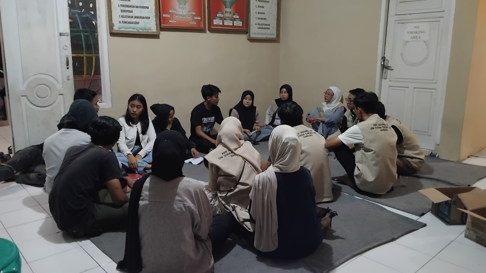
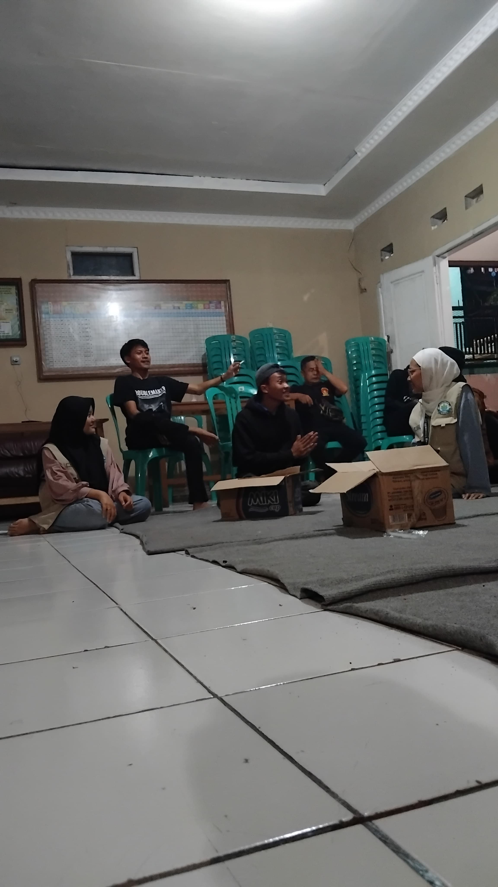

Hari ini, tim KKN melaksanakan kegiatan latihan drama opera yang bertempat di Rumah Pintar RW 02. Kegiatan ini bertujuan untuk mengasah kemampuan seni peran dan vokal para peserta untuk malam puncak acara agustusan, yang sebagian besar merupakan anggota karang taruna dan sebagian dari mahasiswa KKN kelompok 256. Latihan dimulai dengan pemanasan vokal dan gerakan, dilanjutkan dengan latihan dialog dan penghayatan peran. Peserta sangat antusias dalam mengikuti arahan dari instruktur, dan suasana latihan berlangsung penuh semangat.
Latihan ini merupakan bagian dari persiapan pertunjukan drama opera yang akan dipentaskan pada acara puncak Agustusan dan Maulid Nabi.